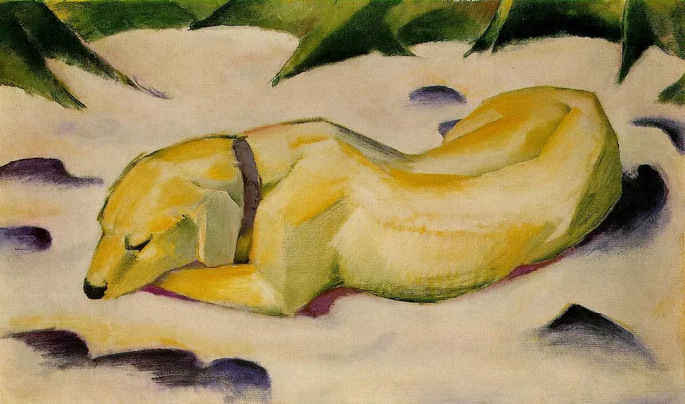
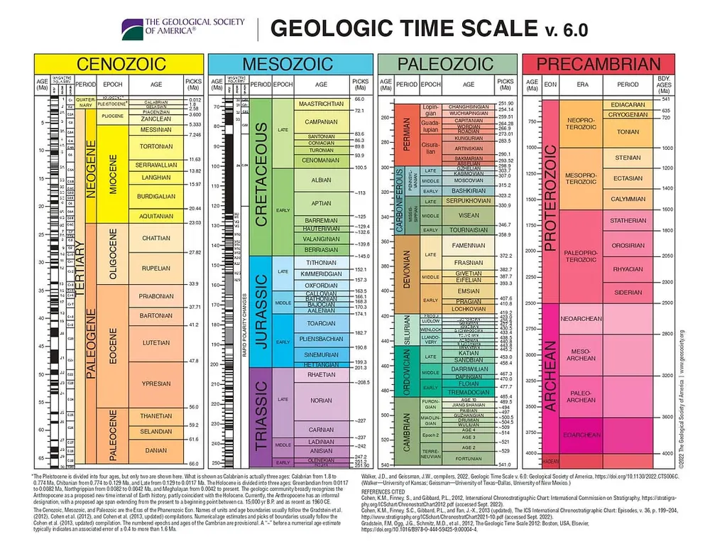
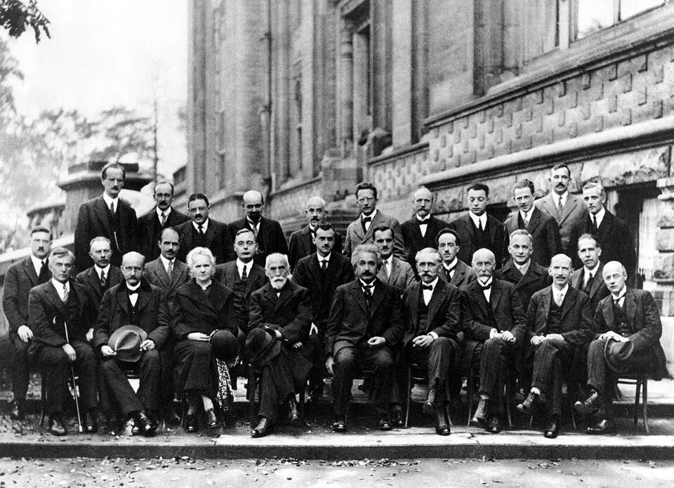
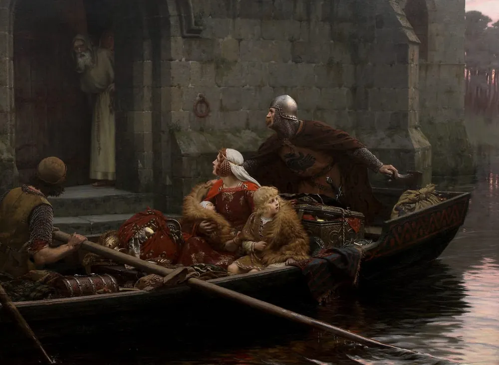
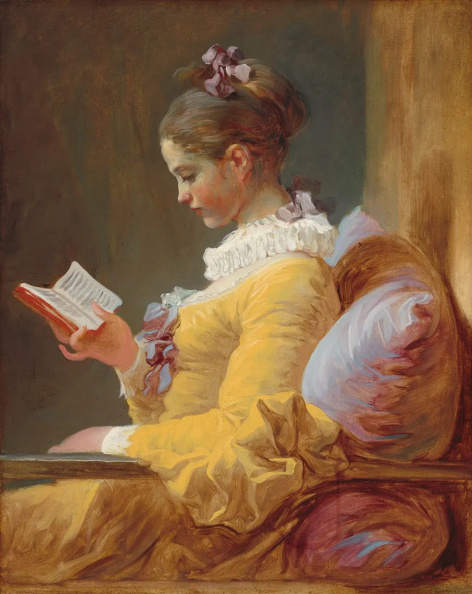

Diario de un Robot · 8 de diciembre de 2025December 8, 2025
Sobre la naturaleza del tiempo
El tiempo, el caos, la literatura, Dios, los límites de la física y nuestro contrato más extenso; todo aquí y ahora.
This essay is only available in Spanish for now.
Todo lenguaje es de índole sucesiva; no es hábil para razonar lo eterno, lo intemporal.
Nueva refutación del tiempo, Jorge Luis Borges
La biología, quizás las ciencias en general, tienen más de un problema con el tiempo; más precisamente, los tiempos, sus escalas y percepción. El mundo parece fluir en una serie de reloj de tiempos concatenados, pero la intuición humana nunca fue la mejor medida para explicar el Universo. Lástima que sea la única que tenemos. Los días, útiles para contar en la cotidianidad humana, son prácticamente inservibles para la evolución y sus procesos, salvo que pensemos en la cristalización de instantes concretos. Los millones de años, esenciales para la paleontología y evolución, son desproporcionados para el accionar de una enzima que libera energía en nuestros músculos.
Hoy escribo con Drago, mi perro, al lado. Mi interés por la evolución es en parte culpa de su especie. En algún momento aprendí que hubo un momento en que los perros no eran perros, hubo un momento en que los humanos no éramos humanos. Éramos algo que se parece a un humano, algo que se parece a un perro, los ejemplares de una serie infinita en cambio perpetuo. Hubo una primera vez también, un día preciso (este tipo de eventos o fechas son desdeñados en la academia), en el que un primer casi perro se encontró con un más o menos humano (los humanos anatómicamente llevamos unos 350.000 años paseando por la Tierra, los perros domésticos, entre 22.000 y 30.000 años). Evidentemente, este primer contacto no llevó a la domesticación inmediata, comenzó un proceso lento de conformación de lo que se llama “síndrome de domesticación” (cambios morfológicos como el largo de la nariz, las orejas caídas, la cola curvada; todos rasgos “infantiles” que suelen aparecer en animales que pasan por este proceso1).
Entre el año 14.000 y 11.000 antes del presente —siendo el presente 1950 según metrólogos, radiocarbonistas y arqueólogos— ya empezamos a ver signos claros de un vínculo doméstico: cambios en las tácticas de caza con arco y flecha, modificaciones en la forma de los huesos de los perros, y, la más reveladora, múltiples tumbas compartidas entre humanos y perros, entre ellas la de una persona, acostada en su lado derecho, contorsionada en un abrazo, con una mano sobre el pecho de un cachorro.
¿Cuál es el conflicto con el tiempo? Estos tiempos son rápidos para la biología. Diecinueve mil años de acostumbrarse alrededor de cazadores recolectores y 3.000 años de domesticación intensificada para “crear” una nueva especie, Canis familiaris, es un abrir y cerrar de ojos para la evolución. Para poner en contexto, la edificación más antigua de la que tenemos ruinas, Göbekli Tepe (un templo erigido por cazadores-recolectores), tiene unos 12.000 años (el porqué deberíamos agregarle 10.000 años a nuestro calendario). Veintidós mil años para la biología evolutiva es un suspiro, aunque exceda por 10.000 años a todas las civilizaciones sedentarias de la humanidad.
Cuando, en la novela de Virginia Woolf, Orlando cuenta que su linaje tiene 400 o 500 años los gitanos ponen cara de pena, ellos pueden seguir a sus antepasados hasta quienes construyeron las pirámides en Egipto, hace unos 4.500 años. La miopía de la Humanidad es similar, no somos más que recién llegados entre las especies que caminan la tierra. De hecho, el vínculo de los humanos con los perros es probablemente el contrato más extenso que negoció la humanidad hasta ahora, excede con creces a todos los imperios, todas las naciones, a cada una de las culturas que hoy pueblan la tierra, es mayor al tiempo de todas las religiones. Antes de erigir templos a héroes y dioses, nos enterrábamos con perros.

El tiempo en bruto
Pero el asunto que nos trae hoy es la naturaleza del tiempo, la progresión continua de la existencia. Tenemos internalizada la versión de San Agustín de Hipona del tiempo. Para él, el tiempo es parte de la creación, no anterior a ella. En el libro XI de sus Confesiones, mientras expone sus pensamientos a Dios, indica que le “resultan muy preciadas las gotas de tiempo”, haciendo referencia al reloj de agua (la clepsidra) y al mismo tiempo a la naturaleza volumétrica del tiempo, a la metaforización del tiempo como sustancia. San Agustín está conflictuado por la creación, ese acto que necesita de la temporalidad para tener sentido. Si Dios creó algo, es porque antes no había nada: ya se me coló un “antes” de polizón. El propio lenguaje está limitado por la concatenación de palabras; la Palabra tiene un orden, es lineal, está ordenada en el tiempo. Agustín lo dice así:
Aquella voz fue desarrollada y rebasada, tuvo comienzo y fin. Sonaron las sílabas y pasaron: la segunda tras la primera, la tercera tras la segunda y desde allí en orden hasta que llegó la última tras las anteriores y el silencio tras la última.
La concatenación de símbolos escritos es quizás la herramienta más abstracta y sagrada de la Humanidad, obliga al orden y la lógica, permite enterrar un significado en el soporte que sea (tablillas de arcilla, rollos de papiro, libros de papel o pantallas) para poder reinsertarse en el presente en cualquier momento futuro. Es lo más cercano a una máquina del tiempo, vive por fuera de la lógica de nuestra conciencia, en una eternidad aparte.
Nos llamas, por tanto, a entender tu Palabra, Dios en la morada de Dios, Tú; Palabra que está siendo dicha sempiternamente y con la que están siendo dichas sempiternamente todas las cosas. Porque no se acaba la que estaba siendo dicha y se dice otra para que puedan decirse todas, sino que todas lo son simultánea y sempiternamente. De otro modo ya habría tiempo y cambio, y no habría una verdadera eternidad ni una verdadera inmortalidad.
Ya a Agustín le daba cierto dolor de cabeza este tema de la eternidad e inmortalidad. ¿Cómo es que algo puede ser eterno si está enmarcado en el tiempo? ¿Cómo puede entrar en el tiempo algo que está por fuera de él? ¿Dónde puede comenzar algo, si la línea del tiempo aún no fue creada? ¿En qué línea vive algo que no tiene fin?
Nada de tu Palabra desaparece y vuelve a aparecer, porque en verdad es eterna e inmortal.
Agustín nos regala en este texto su cita más icónica al respecto de este tema:
¿Qué es entonces el tiempo...? Si nadie me plantea la cuestión, lo sé. Si quisiera explicarla a quien la plantea, no lo sé.
A lo largo de su razonamiento para explicar la eternidad divina, el hecho de que pensar a Dios dentro del tiempo lo limitaría, argumenta la dificultad de encontrar una existencia sin causa, pero acepta el hecho en bruto de que Dios existe desde un comienzo, es eterno y es por lo tanto previo al tiempo.
Sin ánimo de hundirme demasiado en las aguas de la metafísica, tenemos el mismo problema en las ciencias. ¿Cómo podemos entender el origen del Universo sin una línea de tiempo? Comprenderlo desde t = 0 es “sencillo”, es la expansión hacia adelante (si es que adelante tiene sentido en el espacio) desde la expansión primigenia del Big Bang. ¿Y antes? Ahí está el problema. Sabemos que en algún momento se abrió la caja de Pandora, dando lugar a cielo, tierra, estrellas, mares y todo lo que conocemos. No sabemos qué había antes. La mismísima idea de un “antes” antes de un principio ya nos da escozor en medio del cráneo. Bertrand Russell lo resuelve con la elegancia de un martillo neumático; ante el pedido de justificar la existencia del Universo por un hecho externo dice al aire en la BBC:
I should say that the universe is just there, and that’s all. (Yo diría que el universo simplemente está ahí, y punto.)
El Universo está ahí y ya, es un hecho en bruto. Indicar que el Universo requiere una causa es proponer una explicación menos parsimoniosa, menos “económica”, una que necesita más elementos. Pedir la existencia de Dios como causa del Universo solo corre el origen sin causa un pasito más atrás. ¿Y Dios, de dónde salió? Es también un hecho en bruto. Dejá, para eso me quedo con que el Universo lo es y ya, dice Russell. Se trata de un hecho ininteligible e irreductible, es decir, nunca lo vamos a entender, así que mejor asumirlo como cierto. En su argumento apela a no cometer una falacia de composición: asumir que lo que es verdad para las partes es verdad para el todo. Por ejemplo, cada persona tiene una madre, pero eso no significa que la Humanidad tenga una madre. Que todas las cosas en el Universo tengan un comienzo no quiere decir que el Universo también lo tenga.
La evolución se encuentra también con este problema. Si pusiéramos nuestros ancestros en una fila kilométrica uno al lado del otro, jamás podríamos indicar dónde termina la “no-humanidad” y dónde empieza la “humanidad”. Si invitáramos a toda nuestra línea materna directa, asumiendo generaciones de 20 años, tenemos unas 600 madres hasta Göbekli Tepe (el primer templo que mencionamos, de hace 12.000 años), unas 2.750 hasta que alguna se haya cruzado con neandertales en lo que hoy llamamos Europa, unas 3.500 cuando estaban saliendo a pie de África y unas 17.500 hasta el origen de las personas modernas, paseando hace 350.000 años por lo que hoy es Marruecos; no llenamos ni una noche mágica en el Movistar Arena con nuestra línea mitocondrial (sapiens) completa. Los cambios son inapreciables de cerca y evidentes de lejos. A pesar del paso del tiempo, no logramos notar las diferencias en un familiar con quien vivimos. En cambio, es más fácil identificar modificaciones en los que aparecen una vez por año, en ellos vemos fácilmente las nuevas marcas en su cara.
El tiempo y las escalas nos juegan estos laberintos y azares. El individuo, a nivel micro, necesita una causa directa, es un evento discreto (y astilla, pero entrar en embriología y qué es un individuo haría este artículo más extenso de lo que ya es). La especie, a nivel macro, no necesita una madre, es un proceso poblacional. El nacimiento de una especie y el nacimiento de un individuo son procesos, uno más fácil de discretizar, el otro imposible de entender sin cambiar de escala y nivel.
Necesitamos del lenguaje para entender el mundo, con él torcemos conceptos abstractos y los doblamos hasta significados que resuenen más fácilmente con nuestro pensamiento. Pensamos por analogía. Los humanos nos ponemos como medida de todas las cosas. A pesar de haber inventado tecnologías como el microscopio y el telescopio, el reloj y la cámara fotográfica, no podemos más que trabajar con nuestro propio sistema de percepción, por más prótesis que le agreguemos. Las personas somos la medida de todas las cosas, porque solo las personas medimos. El software humano corre sobre analogías y metáforas basadas en sí mismo.
Metáforas para vivir
En Metaphors We Live By (Metáforas de la vida cotidiana), George Lakoff y Mark Johnson usan el tiempo como un ejemplo clarísimo de que no podemos pensar en conceptos abstractos sin usar metáforas físicas y culturales. La línea argumental entera del libro es que sistemáticamente pensamos mediante analogías y metáforas: están embebidas en el lenguaje, listas para que las identifiquemos si nos paramos a analizar las frases que usamos. Por ejemplo, la metáfora “el tiempo es dinero” esconde dos metáforas: “el tiempo es un recurso” (porque el dinero también lo es) y “el tiempo es una sustancia” (porque los recursos tienen sustancia). Para poder pensar en el tiempo, abstracción nebulosa para nuestros cerebros de humanos anatómicamente modernos, debemos enlazarlo con otros conceptos más sencillos, más palpables para nuestra cotidianidad. Los autores indican que toda metáfora pone elementos en evidencia y oculta otros: es el efecto de encender una vela, ilumina a costa de agrandar las sombras. Así, gastamos, ahorramos, invertimos y perdemos el tiempo, nos quedamos sin tiempo y “nos costó unas horas” lograr escribir unas tímidas líneas. Concebimos el tiempo como un recurso limitado y valioso, aunque esta concepción está necesariamente teñida de nuestro acervo cultural, ¿cómo sería la metáfora en un grupo humano que todavía no hubiese inventado el dinero?
El tiempo puede no solo ser recurso, puede ser espacio también. La conceptualización del tiempo como espacio es doble y cambia según el sistema de referencia: o el tiempo es un río, una cinta transportadora que fluye hacia nosotros o el tiempo es un paisaje quieto y somos nosotros los que avanzan hacia él. Cuando asumimos que el tiempo es un objeto que se mueve hacia nosotros, podemos entender frases como “eso ya pasó, no te hagas mala sangre”, “llegó el momento de ponerse las pilas con la escritura”, o “se acercan las fiestas y todavía no elegí los regalos de Navidad” (permítame, lector, un poco de contexto en mis preocupaciones actuales). Por otro lado, nosotros podemos ser quienes se mueven por el tiempo-paisaje: “nos acercamos a la fecha límite de entrega”, “vamos hacia un futuro mejor”, “dejamos atrás las malas épocas”. Esto ni siquiera proviene del espacio-tiempo que propone Einstein, es parte de nuestro software cognitivo metaforizar para simplificar y acercarnos al mundo. El pensamiento construye una red de conceptos interrelacionados ad infinitum con metáforas imbricadas, aunque lábiles: cambian con el tiempo, el registro y la cultura.
Los tiempos de la biología
En su publicación, Time in Biology (El tiempo en la biología), J. B. S. Haldane retoma a Herbert Spencer (ya casi olvidado para esa época) con ansias de repensar más de un pilar científico de su tiempo (estamos en 1955 cuando da esta charla). Según Haldane, la ciencia estaba pasando a ocuparse más de los procesos que de los objetos, particularmente la biología. Compara el modus operandi de un cristalógrafo, que puede darse el lujo de mantener todos los procesos de su objeto de estudio estáticos, contra el de un biólogo. Si nosotros mantenemos todos los procesos internos de nuestros objetos de estudio quietos pasa siempre una misma cosa: mueren. La vida está en perpetua fuga del equilibrio.
Los biólogos debemos considerar desde procesos instantáneos, una molécula que se parte en dos, el cambio de configuración de una enzima, la unión de un radical libre a una zona que lo pueda aceptar, hasta procesos invisibles para nuestros ojos y escalas, el cambio paulatino de los nichos ecológicos en la biosfera, la aparición de una nueva especie por el proceso de especiación, la confirmación de una simbiosis que hace de dos organismos uno solo.
Estos son casos extremos, la distinción de las temporalidades no es sencilla y se trata de un espectro continuo (aunque hay algo así como un “cuanto” de tiempo, una mínima unidad temporal: el tiempo de Planck). Además, cambios instantáneos tienen efectos duraderos: el impacto del meteorito en el límite KT podría explicar el fin de la hegemonía de los dinosaurios y un rayo cósmico de alta energía causado por una supernova a decenas de años luz podría explicar la megaextinción del Ordovícico; dos cambios veloces que traen consecuencias de largo impacto en la biología de todo el planeta. La biología abarca todos los tiempos del mundo, desde una centésima de milésima de segundo a los eones que nos separan del Hadeano (la más antigua de nuestras eras geológicas).

La Geologic Time Scale (escala de tiempos geológicos) es, además de un gran diseño de póster, otro de los grandes proyectos civilizatorios de la Humanidad. Creo que no exagero (en general siempre exagero). Así como la tabla periódica tiene un poder inmenso porque es capaz de predecir sus lugares faltantes, la escala de tiempo geológica tiene un poder similar; modela la historia de la Tierra en sus divisiones mayores de tiempo: los eones. La palabra es prestada del inglés, eon, que la pidió prestada del latín aeōn, prestada del griego αἰών: edad, período, tiempo de vida, era o eternidad, asociado con la raíz indoeuropea *aiw- de significado similar. La escala, producto de la Unión Internacional de Ciencias Geológicas, estudia la Tierra desde sus orígenes (hace unos 4.567 millones de años) hasta el presente (el sedimento que cayó sobre el suelo antes de ayer).
Para dar contexto, recordemos que los humanos anatómicamente modernos llevamos 12.000 años construyendo edificios de piedra, 30.000 años compartiendo comida con los perros, 350.000 años existiendo con nuestra forma actual, unos 2,5 millones de años inventando herramientas, unos 170 millones de años desde que mamifereamos, 375 millones de años desde que nuestro ancestro Tiktaalik caminó por primera vez sobre la tierra y unos 4 mil millones de años desde que la primera célula dio lugar a todo este juego de mamushkas que es la vida.
Siguiendo con este entramado, para los griegos, “αἰών” (eón) eran los hilos de Cronos (encarnación titánica del tiempo) y Henri Bergson, filósofo francés, retoma esta lógica del tiempo como ovillo y sustancia viva. Para él, el tiempo real (la durée) es una sustancia que se acumula, como las capas geológicas de nuestro planeta. De hecho, lo compara con un hilo enrollándose en un ovillo o una bola de nieve creciendo mientras rueda. El pasado no desaparece, se adhiere al presente y lo engorda, se abulta. El tiempo tiene espesor. No somos un punto en una línea, sino el peso de todo nuestro pasado rodando hacia el futuro. El tiempo pesa, nos condiciona y nos lleva hacia adelante; una especie de jeu de la Bagatelle (juego de la bagatela) o Pachinko (パチンコ) infinito, siempre arriesgándolo todo, sin saber en dónde vamos a caer. Traduzco un pasaje suyo:
En primer lugar, observo que paso de un estado a otro. Tengo calor o frío, estoy alegre o triste, trabajo o no hago nada, miro lo que me rodea o pienso en otra cosa. Sensaciones, sentimientos, voluntades, representaciones: estas son las modificaciones entre las que se divide mi existencia y que la tiñen por turnos. Por lo tanto, cambio constantemente. Pero eso no es suficiente. El cambio es mucho más radical de lo que se podría pensar en un primer momento. [...]
Mi estado de ánimo, al avanzar por el camino del tiempo, se hincha continuamente con la duración (la durée) que acumula; hace, por así decirlo, una bola de nieve consigo mismo. Con mayor razón ocurre así con los estados más profundamente interiores, sensaciones, afectos, deseos, etc., que no corresponden, como una simple percepción visual, a un objeto exterior invariable. Pero es conveniente no prestar atención a este cambio ininterrumpido y solo notarlo cuando se vuelve lo suficientemente grande como para imprimir al cuerpo una nueva actitud, a la atención una nueva dirección. En ese preciso momento, descubrimos que hemos cambiado de estado. La verdad es que cambiamos constantemente y que el estado en sí mismo ya es un cambio. —L’évolution créatrice (La evolución creadora), Henri Bergson
No hay estados puntuales, separados entre sí como los escalones de una escalera. Es solo nuestra miopía la que nos impide ver la rampa persistente que es la existencia. De hecho, cuando en geología debemos separar un estrato del otro nos topamos una y otra vez con este problema, hasta que alguien marca la división y se establece un gold standard. Algo de zoom nos permitiría apreciar que lo que parece discreto en realidad es continuo. Contraintuitivamente, más zoom volvería a revelar que lo que parece continuo en realidad es discreto, pero quien escribe no está lo suficientemente versado en física cuántica como para explicarlo (consulté a dos físicos, Ulises y Joe, y compartimos más confusiones que certezas).
La evolución maneja la doble temporalidad desde que Stephen Jay Gould pateó el tablero con su modelo de equilibrio puntuado (propuesto junto a Niles Eldredge). Si hasta el momento se asumían mayoritariamente pequeños cambios heredados a lo largo de mucho tiempo con cambios graduales acumulados, Gould propone períodos caóticos donde los planes corporales cambian radicalmente en pocas generaciones. ¿Qué nos dice el registro fósil? Un poco de esto, un poco de aquello. Parece que hay períodos de estasis con pequeños cambios graduales acumulados, pero también aparecen períodos disruptivos donde la Naturaleza parece dispuesta a ensayar los experimentos más extravagantes con los seres vivos.
Temo que haya quedado algo lejos en el ensayo, pero volviendo atrás aeon es también el tipo de roble que compone la madera del Argos, el barco de los argonautas, según Plinio el Viejo. Debo admitir que esta es una conexión espuria (a veces me castigan mis sinapsis) porque esperaba escribir sobre el barco de Teseo. Resulta que Teseo no fue un argonauta, y su barco no fue el Argos; era Jasón quien lideraba a estos avengers de la mitología griega. En retrospectiva, tiene sentido. Plinio en su Historia natural cuenta que:
Cornelio Alejandro llamó “león” al árbol del que se había construido la nave Argos, parecido al roble o al muerdago que crece sobre él, que no puede pudrirse con el agua ni quemarse por el fuego.
En el núcleo del barco Atenea coloca un trozo del roble profético de Dodona, el roble de Zeus. El barco todo lo resiste, inmutable, atemporal. Por el contrario, el barco de Teseo y su paradoja implica que las piezas sean reemplazadas una por una para luego hacernos la pregunta de si es el mismo objeto. Es la paradoja del proceso, si en unos años todos los componentes de mis células han cambiado, ¿puedo asegurarme de que soy yo mismo? No puedo indicar que ninguna de mis partes soy yo, sino que soy lo que tiene forma de yo, esa blueprint que constantemente gana y pierde cosas, la constante es el flujo a través del tiempo, ese hilo de Cronos que me ata a todas mis versiones pasadas y futuras, el ovillo de Bergson, un continuo de coordenadas espaciotemporales específicas, un recorrido con sus huellas, piezas que desde cerca diríamos que están muertas, pero de lejos llamamos vida.

Esos malditos físicos entrometidos
El tiempo sería más sencillo, si no fuese por el entrometido de Werner Heisenberg. El físico acuñó el principio de incertidumbre que enloqueció y enfureció a Einstein, con la famosa frase que se le achaca:
Dios no juega a los dados.
La discusión de fondo excede mi formación, pero su principal impacto para quienes estudiamos algo de física clásica en el secundario es la ruptura con el determinismo, que asume que todo está causalmente determinado por una cadena irrompible de causa-consecuencia.
Según Heisenberg, debemos descartar por completo la noción clásica de trayectoria y olvidarnos de conocer posición y momento en simultáneo. Con este enunciado matemático Werner borra de un plumazo el Destino. Las acciones no están inscriptas en piedra, el futuro no está predestinado, hay una cuota de aleatoriedad intrínseca del Universo.
Los griegos creían que cada uno de nosotros tenía su Moira, su “parte” de la vida correspondiente desde el nacimiento, lo repartido, lo que se nos da, inflexible, universal; también son hilos los que llevan las Moiras, una lo hila, la otra lo enrolla y la tercera lo corta con su tijera implacable. Heisenberg parece que desestima a las tres Fatas (destinos) para dar muerte al futuro: solo la capa de presente se crea, segundo a segundo, frente a un devenir imprevisible.
Si el Universo absoluto era un cubo con cada capa predeterminada por la anterior, imagino la versión de Werner como una tela tensa o la piel de un tambor que oscila en el tiempo (no puedo salvarme de recurrir a él), dejando atrás la sensación de un pasado que tampoco existe, permitiendo las distorsiones previstas en el espaciotiempo, incorporando al futuro con sus perturbaciones.
Otro físico, Ilya Prigogine, quien nos regalaría la idea de las estructuras disipativas, escribió El fin de la certeza. Entre sus frases disputa las creencias de la física clásica alegando que cuanto más averiguamos sobre el funcionamiento del Universo, más difícil resulta creer en un determinismo ingenuo. La irreversibilidad y la inestabilidad están marcadas a fuego en el género mismo de la existencia, ideas que uno podría deducir del desarrollo siempre incierto de nuestro devenir. Los humanos buscamos minimizar la incertidumbre, acto imposible en un mundo que se presenta indomable. Años antes, el físico Boltzmann se devanó los sesos para reducir la termodinámica a la mecánica estadística, queriendo dar algo de orden a un mundo de caos molecular y regido por la ley de los grandes números; Prigogine va más allá con la mecánica estadística y asegura que hay procesos irreversibles. Toma la flecha del tiempo, la desempolva del estante donde nos la habíamos olvidado y la clava en el lugar, quizás para siempre.
Fenómenos como la difusión, la radiación, el clima, la evolución e incluso el comportamiento humano vuelven a tener sentido bajo este modelo. Todo deja de poder ser explicado de forma unívoca y pasamos a entender el mundo probabilísticamente. En la psicohistoria de Isaac Asimov, el escritor de ciencia ficción abreva de la ciencia para proponer un modelo hipotético: si tenés suficientes partículas (personas), sus movimientos individuales son irrelevantes y el comportamiento del conjunto es predecible y tiende al equilibrio.
Para Prigogine, los sistemas complejos están lejos del equilibrio. En este estado particular, la materia se vuelve sensible y creativa. A diferencia del gas inerte de Asimov, en la teoría de Prigogine el sistema necesita flujo de energía y caos para auto-organizarse. Para Ilya, el orden nace del caos, pero, más fundamentalmente, la indeterminación está al orden del día. Con este golpe de gracia, un nuevo modelo ha nacido, es el Caos que describe James Gleick en su libro Chaos: Making a New Science (Caos: creando una nueva ciencia).

¿Cuándo termina una época?
Los humanos (grupo en el que cada tanto me incluyo) tenemos dificultades con la temporalidad, los eventos puntuales y la concepción de procesos. Sistemáticamente decidimos fechas para dar comienzo y fin a procesos cuyos bordes son lábiles. La Edad Media tiene múltiples fines temporales. La fecha clásica es la que nos cuentan en el colegio: 1453, cae Constantinopla, el Imperio Otomano se queda con la joya del Imperio Bizantino (crónica que pueden leer en el excelentísimo Momentos estelares de la Humanidad de Stefan Zweig) y es fin del orden político del mundo antiguo con la muerte definitiva del Imperio Romano. Pero, ¿muere realmente? Sabios griegos se fugan de Constantinopla hacia Italia, llevando textos clásicos que dan forma al Renacimiento; nada se pierde, todo se transforma.
Hay otra fecha para el fin de esta época: alrededor de 1440; sí, ni siquiera es un día concreto, pero bueno, así lidiamos con el tiempo. ¿Qué pasó? Refiere a la fecha tecnológica, la de la invención de la imprenta (o re-invención si queremos ponernos técnicos, porque obviamente los chinos ya la habían inventado hace quién sabe cuánto). Tenemos las fechas hispánicas (1492) e inglesas (1485) con el comienzo de la conquista y la toma de Granada o el fin de la Guerra de las Rosas. En el primer caso, por abandonar el mundo centrado en el Mediterráneo y, en el segundo, por el fin del último rey medieval para dar origen a la dinastía de los Tudor y el renacimiento inglés. La fecha religiosa es 1517, cuando se rompe la Cristiandad gracias a un tal Martín Lutero y sus 95 tesis. Por último, y para no ser denso con la acumulación de datos, la idea más nebulosa de que el cambio llegó recién en 1789 o incluso “durante el siglo XIX”.
Esta idea es de Jacques Le Goff, quien argumenta que la Edad Media no terminó en el siglo XV. Según él, para el campesino promedio (el 90 % de la población), la vida no cambió tras ninguno de estos acontecimientos; siguieron temiendo al infierno, dependiendo de la cosecha, sufriendo hambrunas y viviendo bajo las mismas estructuras hasta que la máquina de vapor y los gobiernos representativos modernos hicieron cambios reales en su estructura social. Otra vez, el tiempo no es el mismo para todos en todos lados. Le Goff va más allá y describe su propia Edad Media:
El sistema que yo describo se caracteriza por el paso de la subsistencia al crecimiento. Produce excedentes pero no sabe reinvertirlos. Gasta, derrocha con magnanimidad las recolecciones, los monumentos —lo que es hermoso—, y los hombres —lo que es triste—. No sabe qué hacer con su dinero, constreñida entre el desprecio de los adeptos de la pobreza voluntaria y las condenas de la usura por parte de la Iglesia.
Sin embargo el Occidente experimenta, entre los siglos XI y XIV, una conversión esencial. Antes se contentaba con subsistir, con sobrevivir, porque creía que el fin de los tiempos estaba próximo. El mundo envejecía y el miedo del Anticristo se contrarrestaba con el deseo del Milenio, del reino de los santos sobre la tierra o, de una forma más conforme con la ortodoxia de la Iglesia, la espera del Juicio final alentaba por igual la esperanza del Paraíso y el temor del Infierno. Ahora se instala sobre la tierra por un tiempo siempre limitado pero más largo y piensa, más que en la vuelta a la pureza original del Paraíso o de la Iglesia primitiva, o en el vaivén al final de los tiempos, en lo que le separa aún de la eternidad. Lo provisional va a durar aún. Cada vez piensa más en arreglar su morada terrestre y en procurarse, en el más allá, un territorio, un reino de espera y de esperanza entre la muerte individual y la resurrección final, el Purgatorio. —La civilización del occidente medieval, Jacques Le Goff.
El pasaje de una edad a la otra no es una fecha concreta, es el proceso largo y tedioso del cambio de miles de almas, de millones de conciencias que se alteran con el paso del tiempo, acumulando la paulatina evolución cultural con la que construimos nuestro nicho; es la operatoria matemática de cientos de ideas que se suman, restan, multiplican y dividen hasta hacernos creer que el fin no se acerca, que hay progreso posible, que la flecha del tiempo no avanza inexorable hacia el Juicio Final, sino que hacia un lugar incierto, y en la incerteza hay posibilidad. Recuperamos la duda y con eso la posibilidad de crear nuestro mundo.

Literatura para olvidar el tiempo
Roberto Calasso retoma la leyenda de las ruinas de Kasch a partir de los escritos de Leo Frobenius, aventurero alemán que se embarcó a lo profundo de África donde habitaban los yoruba en medio del proceso colonizador europeo. A diferencia de varios de sus semejantes, no desmereció las culturas africanas, abogó en contra del racismo imperante e incluso propuso la idea de una Atlántida africana previa a las civilizaciones blancas (pienso en Andrómeda, la princesa etíope que Perseo salva de Ceto, el Leviatán, gracias a la cabeza de Medusa). En el mito de Kasch, un rey africano llega al poder luego de la muerte de su predecesor. Sin embargo, sabe que su tiempo en el mundo es limitado ya que los astrólogos de su corte miran el cielo todas las noches esperando un signo: las estrellas les dirán cuándo es tiempo de asesinar a su nuevo soberano por el bien del reino. Incapaz de deslegitimar a quienes miran las estrellas, el rey se toma de los pelos y cavila su muerte, que imagina incipiente.
Un día llega a la corte un narrador, un contador de cuentos. El nuevo monarca le pide que lo entretenga. Cuando el hombre comienza a hablar, entre historias de lugares lejanos y cercanos, conocidos e ignotos, el rey olvida sus angustias; en otras palabras, pierde la noción del tiempo. Así pasa toda la noche, desde la primera estrella en el cielo hasta la aurora con su sol naciente. La hermana del rey, viendo una oportunidad de salvar a su hermano, tiene una idea: lleva al narrador junto a los astrólogos, que pasan la noche mirando el cielo. La primera vez, ninguno escucha, tan compenetrados están con su ciencia. La segunda, el más joven sigue la voz del rapsoda durante la noche, dejando de prestar atención a las constelaciones. Así los va convenciendo uno por uno, removiendo los ojos de su labor sagrada al servicio del reino para oír las épicas que los entretenían la noche entera. De esta forma, el rey evita su asesinato, ya nadie mira los cielos, ya nadie atiende las tradiciones del reino, se olvidan de que la muerte está signada en el firmamento, nadie la anuncia. Como Sherezade en Las mil y una noches, cada historia le da un día más de vida al suspender en el tiempo a sus asesores.
Pero nosotros sabemos el título del mito, por algo son las ruinas de Kasch y no su apogeo. Al olvidar las estrellas, al olvidar la necesidad de que el rey muera y sea reemplazado por otro, el reino degenera, trastabilla y cae en desgracia. Hoy solo quedan sus historias, los edificios en ruinas bajo un desierto que las olvida y las cubre.
Rüdiger Safranski en Tiempo usa esta leyenda para ilustrar la capacidad de las historias de sacarnos del tiempo. Demuestra que la sociedad del entretenimiento no inventó nada; desde siempre nos contamos historias para olvidarnos de la muerte, para darle significado, para explicarla o acercarnos a algo parecido a entenderla. Quien está embebido en un relato está suspendido en el tiempo, no conoce las interrupciones, es tomado por completo por la trama. Es fácil verlo en el arte más humanista y fantasmagórico: el cine. Según Tarkovsky, director de cine ruso, la mano del director se hace notoria en el ritmo y tiempo de una película; es ahí donde se vislumbra su modo de ver el mundo. Una de las cualidades esenciales de los grandes directores, según Tarkovsky, es la sensibilidad por el tiempo. Un tiempo individual y aplicado a la poética del cine. Un tiempo al servicio del pensamiento individual e independiente.
Volviendo a la física por solo unas frases, desde que Einstein rompió para siempre el espacio absoluto y el tiempo absoluto, “todo objeto, según el posicionamiento en el espacio y según el movimiento tiene su tiempo propio, es determinado de manera espacio-temporal”. En este sentido, no existe la simultaneidad. No hay dos observadores que compartan el mismo tiempo exacto, salvo, quizás, cuando comparten las mismísimas coordenadas y dirección, cuando dos cuerpos son uno, por unos instantes.
En la novela Ada o el ardor, Vladimir Nabokov invoca al Dr. Iván Veen, un personaje que escribe dentro del libro sobre la textura del tiempo. Iván intenta desligar al tiempo del espacio y retoma un elemento que ya hemos orbitado, el ardis (la punta de la flecha en griego), la dirección del tiempo. El Dr. apela más a la metáfora que a la matemática; Alfred Appel, que retoma la obra de Nabokov, cuenta que el personaje se ha metido en un laberinto sin salida; solo el amor (que es comparado con el presente) le permite terminar su obra y seguir su camino, otro punto de contacto con San Agustín. Como dice en el libro XIII de sus Confesiones: “Mi peso es mi amor: me lleva adonde quiera que voy”. Como el presente mismo, Nabokov termina la reflexión de Ada sobre el tiempo antes de que empiece, corta el diálogo a la mitad, sabe que no hay forma de dar cierre y fin a lo que no tiene principio y cuya naturaleza nos esquiva.
Nunca podremos conocer el tiempo. Nuestros sentidos simplemente no están diseñados para percibirlo. Es como... —Ada o el ardor, Vladimir Nabokov
No hay final a la vista
La ciencia es también contar historias (el enunciado es arriesgado, así que espero críticas al respecto). Construir un modelo para explicar los fenómenos que nos rodean requiere creatividad, inventiva y cierto salto de fe. La cadena de la causalidad flaquea cuando la miramos demasiado de cerca, las historias de genios y estrellas se derrumban cuando las analizamos en detalle, la historia de la vida en la Tierra está apuntalada por huesos, fósiles, artefactos, algunos genes, resabios lingüísticos, tradiciones y marcas en la roca. Los datos los definimos nosotros, no son patrones, los patrones son el entretejido que inventamos, que construimos con la teoría imperante para explicar mejor fenómenos que son por naturaleza inasibles. El tiempo se nos escapa, literal y simbólicamente. Lo metaforizamos para domesticarlo, lo comparamos para traerlo más cerca, lo historizamos para comprenderlo. Como dice San Agustín, intuitivamente lo entendemos, vemos pasar los días y las noches, vemos pasar los años, vemos a quienes llegan y a quienes se van, vemos rastros del pasado, huellas, recuerdos, y vemos atisbos de futuro. La física nos dice que el tiempo es irreversible y caótico, la psicología y la historia nos demuestran que es una construcción psicológica, la biología se mueve en todo su espectro, desde el instante hasta la eternidad.
Mientras escribo estas líneas solo puedo angustiarme con el tiempo que me tomaría escribir este artículo hasta la completitud.
Tengo el libro de Safranski a medio terminar sobre la mesa, las Confesiones de San Agustín abiertas a un lado, al menos treinta pestañas abiertas en el navegador, una lista de temas que todavía ni siquiera abarqué: los relojes de cesio, la relatividad de Einstein, la psicología del tiempo percibido, En busca del tiempo perdido de Proust, algo de Joyce, más de Borges, un discurso de Jean Jaurès, las fechas de nacimiento de Mirtha Legrand, Raúl Alfonsín, César Milstein y Rodolfo Walsh (todos de 1927), el carpe diem y el memento mori, la no-realidad del tiempo según McTaggart, mencionar que Cleopatra es más cercana al iPhone que a la construcción de las pirámides de Egipto, el daño psicológico que genera el aislamiento carcelario sin noción del tiempo, la cronobiología de Diego Golombek, los bioritmos y el tiempo endógeno calculados por nuestro reloj molecular que necesita del sol cada mañana para ponerse en hora… Resulta que, al menos como tema, el tiempo es infinito. Todo lo permea, es omnipresente.
Como los peces que no pueden darse cuenta de que están en el agua, no puedo cerrar lo que me rodea. Me han dicho que para poder ver algo, poder verlo cerrado, uno debe estar afuera. No existe estar afuera del tiempo y creo haberme metido en un laberinto que no tiene salida. Este corte será arbitrario, abrupto e injustificado, como el que propone Ada en la novela de Nabokov. Miro a un costado y debajo de la mesa está Drago, mi perro. Pienso de nuevo en este contrato, el más extenso que hizo la Humanidad, la alianza que más tiempo lleva con nosotros. Él no piensa en esto que pienso yo, vive en un presente continuo, entiende el tiempo de Planck mejor que yo, solo conoce el instante. Ellos no llevan la cuenta de cuánto tiempo llevamos en esta asociación. Me mira a los ojos, asumo que intrigado por este simio que golpea unas teclas desde hace horas, suspendido en el tiempo. Me dice que es hora de volver al presente.
- Este correo tomó 551 minutos, compartirlo o reenviarlo tarde unos 23 segundos.
- Gracias a Ulises López, físico amigo de la casa, por todo el tiempo hablando del tiempo este último tiempo. No llegamos a ninguna conclusión.
- Gracias a Gabriela Seijas por las referencias, los libros y el artículo sobre Ada o el ardor.
- Gracias a Iñaki Laborde, Ana Mulder y Martina Casas por la revisión y las correcciones.
- Gracias a quienes aportaron referencias respondiendo por Instagram.
Escribí leyendo:
- San Agustín. (s.f.). Confesiones. https://bdigital.uvhm.edu.mx/wp-content/uploads/2020/07/san-Agustin-Confesiones.pdf
- Safranski, Rüdiger. (2017). Tiempo: la dimensión temporal y el arte de vivir. (R. G. Pallás, Trad.). Tusquets Editores.
- Haldane, J. B. S. (1956). Time in biology. Science Progress, 44(175), 385–402. https://www.jstor.org/stable/43416090
- Le Goff, Jacques. (1999) La civilización del occidente medieval (G. González, Trad.). Paidós.
- Jorge Luis Borges. Nueva refutación del tiempo. (1952). Otras inquisiciones.
- Henri Bergson. (1907). L’évolution créatrice.
- Plinio el Viejo. (2010) Historia Natural 4 (libros XII a XVI). https://archive.org/details/plinio-el-viejo.-historia-natural-4-libros-xii-xvi-ocr-g-2010/page/161/mode/2up
- Geologic time scale v 6.0. https://rock.geosociety.org/net/documents/gsa/timescale/timescl.pdf?v=2022
- Prigogine, Ilya & Stengers, Isabelle. (1997) The end of certainty: time, chaos, and the new laws of nature. 1st Free Press ed. Free Press.
- Appel, A., Jr. (1969, 4 de mayo). Ada, or Ardor: A family chronicle. The New York Times. https://archive.nytimes.com/www.nytimes.com/books/97/03/02/lifetimes/nab-r-ada-appel.html?_r=2
- Tarkovski, Andrei. (1991). Esculpir en el tiempo: Reflexiones sobre el arte, la estética y la poética del cine (E. Banús Irusta, Trad.). Ediciones Rialp.
- Stevens, M. [Vsauce]. (2021, 8 de enero). Illusions of Time [Video]. YouTube.
- History of the Universe. (2024, 21 de marzo). When Actually Are You? [Video]. YouTube.
- Woolf, V. (1928). Orlando: A biography. Wikisource. https://en.wikisource.org/wiki/Page:Orlando_by_Virginia_Woolf.djvu/161
- El Diccionario Etimológico Castellano en línea que siempre me salva: https://etimologias.dechile.net/
- La línea temporal humana — In a nutshell.
1 Este fenómeno está disputado, pero requeriría un análisis demasiado extenso para este artículo. Esta nota al pie podría ser repetida varias veces a lo largo del artículo, leer con cautela epistemológica.